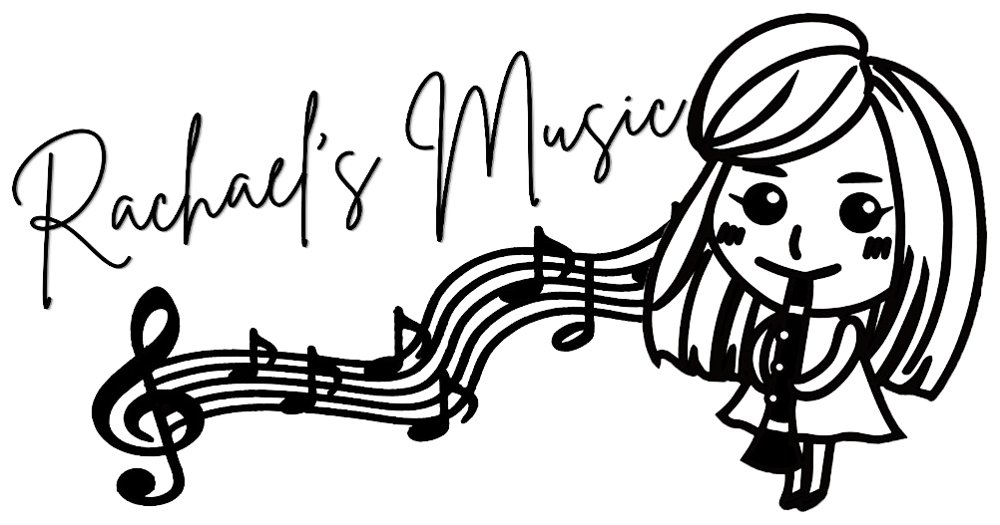

瑞瑞老師的管樂教室
音階指法練習
依各樂器調音音域 · 標準音 A4 = 442 Hz · 4/4
譜面音
C (do, 1)
開管（0）
實音
B♭
1 / 13
每音拍數（拍號 4/4）

音樂基礎 · 樂器指法/把位練習
本小工具由吟遊詩人張小熊肝膽製作。練習裡的樂器指法/把位，主要參考 Yamaha 公開樂器指法表、Tomplay 指法資料等，方便對照學習；若與您手中的樂器或老師教法略有出入，還請以現場指導為準。
瑞瑞老師的管樂教室
依各樂器調音音域 · 標準音 A4 = 442 Hz · 4/4
C (do, 1)
開管（0）
B♭
1 / 13